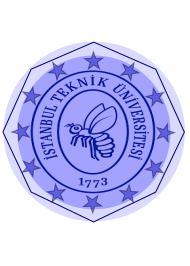

Istanbul Technical University (Turkish İstanbul Teknik Üniversitesi, commonly referred to as ITU or Technical University) is an international technical university located in Istanbul, Turkey. It is the world's third-oldest technical university dedicated to engineering sciences as well as social sciences recently, and is one of the most prominent educational institutions in Turkey. ITU is ranked 173rd worldwide (1st nationwide) in the field of Engineering & Technology and 307th worldwide (1st nationwide) in the field of Natural Sciences by the QS World University Rankings in 2016. Graduates of Istanbul Technical University have received many TUBITAK science and TUBA awards. Numerous graduates have also become members of the academy of sciences in the U.S.A, Britain and Russia. The university's basketball team, ITUSpor, is in the Turkish Basketball Second League. The university has 39 undergraduate, 144 graduate programs, 13 colleges, 346 labs and 12 research centers. Its student-to-faculty ratio is 12:1
History
Ottoman Empire
Considered as the world's third institution of higher learning specifically dedicated to engineering education, Istanbul Technical University (ITU) has a long and distinguished history which began in 1773. ITU was founded by Sultan Mustafa III as the Imperial School of Naval Engineering (Ottoman Turkish: Mühendishane-i Bahr-i Hümayun), and it was originally dedicated to the training of ship builders and cartographers. In 1795 the scope of the school was broadened to train technical military staff for the modernization of the Ottoman army.  In 1845 the engineering function of the school was further widened with the addition of a program devoted to the training of architects. The scope and name of the school were extended and changed again in 1883 and in 1909 the school became a public engineering school which was aimed at training civil engineers who could provide the infrastructure for the rapidly developing country.
Modern Turkey
By 1928 the institution had gained formal recognition as a university of engineering which provided education in both engineering and architecture. In 1944 the name of the institution was changed to Istanbul Technical University and in 1946 the institution became an autonomous university with architecture, civil, mechanical, and electrical engineering faculties.
With its long history of 243 years, its modern teaching environment, and well-qualified teaching staff, Istanbul Technical University today is the personification of engineering and architectural education in Turkey. Istanbul Technical University not only played a leading role in the modernization movement of the Ottoman Empire, but has also maintained its leadership position in the changes and innovations taking place in the construction, industrialization, and technological realms during the modern days of the Turkish Republic. Engineers and architects trained at Istanbul Technical University have played significant roles in the construction of Turkey. Alumni also played a significant role in Turkish politics.
As a child, Curie took after her father. She had a bright and curious mind and excelled at school. But despite being a top student in her secondary school, Curie could not attend the men's-only University of Warsaw. She instead continued her education in Warsaw's "floating university," a set of underground, informal classes held in secret.
Academics
The structure of each "faculty" at ITU is comparable to those of "colleges" in the U.S. institutions, where each faculty is composed of two or more departments. For example, the Faculty of Electrical and Electronics Engineering consists of the departments of electrical engineering, control engineering, electronics and communication engineering.